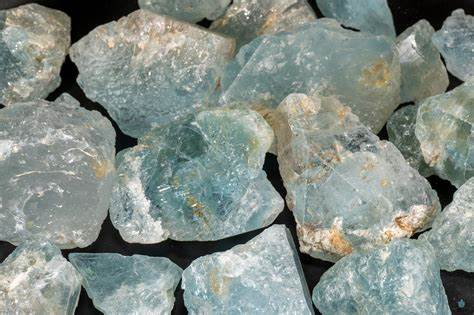

Lapis Lazuli vs. Other Blue Gemstones: A Comparative Guide

Blue gemstones are some of the most beautiful and mesmerizing stones you can find. From the deep, rich blue of Lapis Lazuli to the sky-bluestones of Aquamarine, these stones have been cherished for thousands of years. But what makes one blue gemstone different from another? How do you choose the perfect blue stone for your jewelry, collection, or even as a gift? In this article, we'll take a deep dive into Lapis Lazuli and other blue gemstones to help you understand their differences, what makes them special, and how to pick the one that's right for you.
This guide will give you a closer look at blue gemstones like Sapphire, Aquamarine, Blue Topaz, and more. You'll also learn where they come from, what they symbolize, and how to care for them. Plus, if you're feeling adventurous, we'll show you why rockhounding—hunting for gems and crystals—could be your next exciting hobby!
Overview of Blue Gemstones
Blue gemstones have been admired and treasured for centuries. The color blue often reminds people of the sky, the ocean, and a sense of calm and beauty. Blue gemstones can be found all over the world, and each one has its own unique features. Some are precious, like Sapphire, while others, like Blue Topaz, are more affordable but still stunning. Here are some of the most famous blue gemstones you'll come across:
- Lapis Lazuli: A deep blue stone known for its historical significance.
- Sapphire: A royal blue gem that is one of the hardest stones in the world.
- Aquamarine: A light blue stone that looks like the clear blue sea.
- Blue Topaz: A bright, sky-blue gem that is often affordable.
- Turquoise: A greenish-blue gemstone that has been used in jewelry for centuries.
- Larimar: A rare gemstone with a soft, sky-blue color found only in the Dominican Republic.
Spotlight on Lapis Lazuli
Lapis Lazuli is one of the most famous blue gemstones. It has been used for thousands of years and was even prized by ancient civilizations like the Egyptians and Mesopotamians. Lapis Lazuli is known for its deep, royal blue color, often with flecks of gold from the mineral pyrite.
History & Origins
Lapis Lazuli has been used as far back as 7,000 years ago! It was carved into jewelry, statues, and even ground into powder to make blue paint. The famous mask of King Tutankhamun from Ancient Egypt was decorated with Lapis Lazuli, showing how highly this stone was valued.
Physical Properties
- Color: Lapis Lazuli is known for its intense blue, often described as ultramarine.
- Hardness: It’s not the hardest gemstone, with a hardness of 5-6 on the Mohs scale, but it’s strong enough for many types of jewelry.
- Composition: Lapis Lazuli is made of several minerals, including lazurite, calcite, and pyrite (which gives it those sparkling gold flecks).
Mining Locations
Most of the world’s best Lapis Lazuli comes from Afghanistan, where it has been mined for over 6,000 years. Other places where you can find Lapis include Chile and Russia.
Uses and Symbolism
Lapis Lazuli is often used in necklaces, rings, and even art pieces. People believe it brings wisdom, truth, and inner peace. In ancient times, it was seen as a stone of the gods, used in royal jewelry and sacred ceremonies.
Comparative Overview of Other Blue Gemstones
1. Sapphire
- Color: Sapphires come in many colors, but the most popular is a rich, royal blue.
- Hardness: With a hardness of 9 on the Mohs scale, Sapphire is one of the hardest gemstones, making it perfect for everyday jewelry like rings and bracelets.
- Mining Locations: Sapphires are found in places like Sri Lanka, Myanmar, Madagascar, and Australia. In the United States, you can find sapphires here.
- Symbolism: Wisdom, loyalty, protection.
2. Aquamarine

- Color: Aquamarine is a light, transparent blue stone, often compared to the color of seawater.
- Hardness: 7.5-8 on the Mohs scale.
- Mining Locations: Primarily mined in Brazil, Nigeria, and Pakistan. In the United States,you can find aquamarine here.
- Symbolism: Calm, courage, and clear communication.
3. Blue Topaz
- Color: Blue Topaz can range from pale to bright blue, though the blue color is often created by treating the stone.
- Hardness: Blue Topaz has a hardness of 8, making it a strong choice for jewelry.
- Mining Locations: Brazil, Russia, and Mexico are big sources of Blue Topaz.
- Symbolism: Blue Topaz is said to bring clarity, calmness, and emotional healing.
4. Turquoise

- Color: Turquoise is an opaque stone that ranges from blue to greenish-blue.
- Hardness: It’s relatively soft, with a hardness of 5-6.
- Mining Locations: Turquoise is mined in the USA (Arizona), Iran, and Tibet. In the United States, you can find turquoise here.
- Symbolism: It is believed to bring protection, healing, and good fortune.
5. Larimar
- Color: Larimar is a light, dreamy blue gemstone found only in the Dominican Republic.
- Hardness: It’s one of the softer stones, with a hardness of 4.5-5.
- Mining Locations: It’s only found in one place in the world, the Dominican Republic.
- Symbolism: Larimar is said to bring peace, tranquility, and emotional healing.
RELATED TOPIC: Black Crystals in Nature: Varieties, Properties, and Uses
Comparative Analysis: Lapis Lazuli vs. Other Blue Gemstones
| Gemstone | Color | Hardness (Mohs Scale) | Rarity | Major Mining Locations | Symbolism | Best Uses in Jewelry |
|---|---|---|---|---|---|---|
| Lapis Lazuli | Deep royal blue with gold flecks | 5-6 | Moderately rare, ancient history | Afghanistan, Chile, Russia | Wisdom, truth, royalty | Necklaces, pendants, decorative |
| Sapphire | Rich, royal blue (also other colors) | 9 | Highly valuable, widely prized | Sri Lanka, Myanmar, Madagascar, Australia | Wisdom, loyalty, protection | Engagement rings, high-end jewelry |
| Aquamarine | Light to deep sea blue | 7.5-8 | Common, popular in jewelry | Brazil, Nigeria, Pakistan | Calm, courage, communication | Rings, pendants, vintage jewelry |
| Blue Topaz | Sky blue to bright blue | 8 | Readily available, affordable | Brazil, Russia, Mexico | Clarity, emotional healing | Affordable rings, earrings, pendants |
| Turquoise | Greenish-blue, opaque | 5-6 | Widely used in traditional jewelry | USA (Arizona), Iran, Tibet | Protection, healing, prosperity | Bracelets, earrings, Native American jewelry |
| Larimar | Light sky blue, unique patterns | 4.5-5 | Very rare, found in one location | Dominican Republic | Peace, tranquility, emotional healing | Unique, handcrafted pieces |
Care and Maintenance of Blue Gemstones
Taking care of your blue gemstones is important to keep them looking their best. Here’s how to care for some of these stones:
- Lapis Lazuli: Keep it away from water and chemicals. Use a soft, dry cloth to clean it, and store it separately to avoid scratches.
- Sapphire and Blue Topaz: These are harder stones and can handle more wear. You can clean them with mild soap and water.
- Aquamarine: Clean with mild soap and a soft brush, but avoid harsh chemicals.
- Turquoise: Avoid water, chemicals, and direct sunlight as they can cause the color to fade.
- Larimar: This soft stone should be handled gently. Clean it with a dry cloth and store it carefully.
Buying Guide: How to Choose Between Blue Gemstones
When choosing between blue gemstones, here are some things to consider:
- Purpose & Style: Are you buying the stone for everyday wear or a special occasion? Harder stones like Sapphire are great for rings that will be worn daily, while softer stones like Lapis Lazuli are better for necklaces or earrings.
- Budget: Sapphire tends to be more expensive, while Lapis Lazuli and Blue Topaz are more affordable options.
- Quality: Look for vibrant color, few inclusions (imperfections), and good polish.
- Ethics: If you care about ethical sourcing, research where the gemstone comes from. For example, Lapis Lazuli from Afghanistan is often mined under tough conditions, while stones like Aquamarine and Turquoise have more ethical sourcing options.
If you're curious about discovering your own gemstones or learning more about crystals, consider checking out rockhounding websites likeRockhounding.org. We offer exciting tips, guides, and maps to get started with finding your own treasures.
Conclusion
Blue gemstones like Lapis Lazuli, Sapphire, and Aquamarine offer something for everyone—whether you’re looking for a statement piece of jewelry or a meaningful stone with a rich history. Each stone is unique in its color, durability, and symbolism. Lapis Lazuli stands out for its deep blue color and historical significance, while stones like Sapphire are known for their sparkle and durability.
No matter which blue gemstone you choose, you can’t go wrong with the beauty and elegance of these incredible stones. If you're ready for an adventure, why not try rockhounding and discover your own gemstones? There are so many gems waiting to be found, and with a little luck, you could uncover your own piece of history!